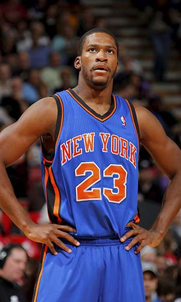

|  |
Матчи |
12 |
|
Передачи (всего/среднее) |
24 |
2 |
| В основе |
|
|
Подборы в защите (всего/среднее) |
20 |
1.7 |
| Время (всего/среднее) |
176:34 |
14:43 |
Подборы в атаке (всего/среднее) |
2 |
0.2 |
| Очки (всего/среднее) |
51 |
4.3 |
Подборы (всего/среднее) |
22 |
1.8 |
| 2-очковые броски (всего/среднее) |
14/33 |
1.2/2.8 |
Перехваты (всего/среднее) |
11 |
0.9 |
| 2-очковые броски (% реализации) |
42.4% |
|
Потери (всего/среднее) |
10 |
0.8 |
| 3-очковые броски (всего/среднее) |
5/18 |
0.4/1.5 |
Блокшоты (всего/среднее) |
4 |
0.3 |
| 3-очковые броски (% реализации) |
27.8% |
|
Блокшоты соперника (всего/среднее) |
1 |
0.1 |
| Штрафные броски (всего/среднее) |
8/13 |
0.7/1.1 |
Фолы (всего/среднее) |
20 |
1.7 |
| Тони Дуглас |
Штрафные броски (% реализации) |
61.5% |
|
Коэффициент полезности (всего/среднее) |
44 |
3.7 |